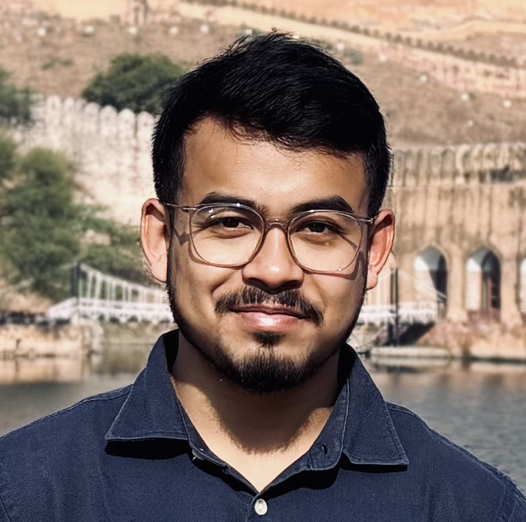

Signal Processing & Communication (SPCOM), Dept. of Electrical Engineering
Indian Institute of Technology, Kanpur, India
Hi, I'm Abinash. I'm a doctoral researcher in the Signal Processing & Communication (SPCOM) branch of the Electrical Engineering department at Indian Institute of Technology (IIT), Kanpur. I've completed my Master's in Machine Learning and Computing from IIST, Thiruvananthapuram, and I'm passionate about exploring different areas of AI, especially computer vision, multimodal learning and embodied intelligence. Over the years, I've worked on projects ranging from object tracking and vehicle re-identification to driver behavior understanding and scene understanding for autonomous systems. I enjoy diving into new ideas, experimenting with research problems and building practical solutions that connect theory with real-world applications. Outside of academics and research, I'm always curious to learn something new and enjoy meaningful conversations about technology, science and nature.
Worked on fast and resource-efficient monocular surface normal estimation.
Worked on a large-scale egocentric two-wheeler dataset in Indian context.
Worked on the perception modules of a digital twin of smart vehicle parking management system, multi-camera object tracking and scene understanding.
Joined DUIET for B.Tech
Completed B.Tech and joined IIST for M.Tech
Joined Aumovio (then Continental Automotive) as Computer Vision Intern, in M.Tech 2nd year
Completed M.Tech and joined CVIT, IIIT Hyderabad as Research Fellow
Joined IIT Kanpur as Doctoral Researcher and started my PhD journey
Research, Job, Life